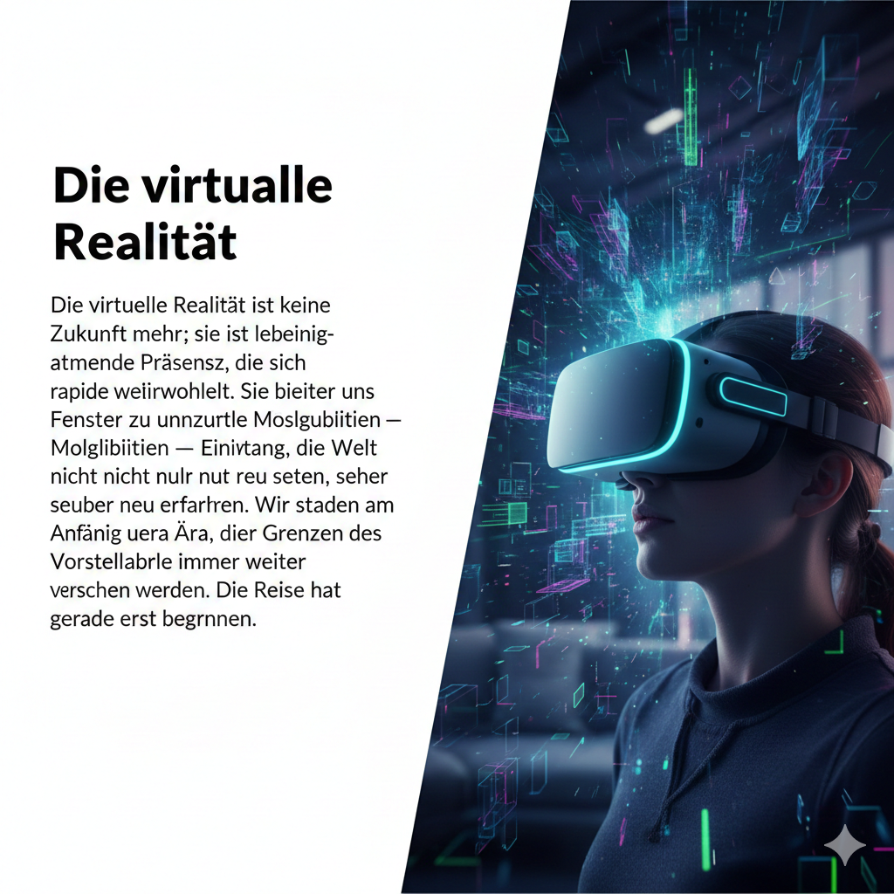

NEU-EDEN, 1. Januar 2024 – Die Grenzen der Realität verschwimmen zusehends, während die Technologie der virtuellen Immersion eine Ära einläutet, die einst nur in den kühnsten Träumen von Visionären existierte. Was als klobige Experimente in staubigen Laboren begann, hat sich zu einem Phänomen entwickelt, das bereit ist, jede Facette unseres Lebens zu revolutionieren – von der Bildung über die Unterhaltung bis hin zur Art und Weise, wie wir arbeiten und miteinander in Kontakt treten. Die aktuelle Generation der immersiven Systeme markiert einen monumentalen Sprung nach vorn. Vorbei sind die Zeiten von unscharfen Bildern und störenden Verzögerungen. Die neuesten Geräte bieten eine Bildschärfe und Reaktionsgeschwindigkeit, die das menschliche Auge kaum noch von der physischen Welt unterscheiden kann. Mit haptischen Rückmeldungen, die Berührungen simulieren, und räumlichen Audiosystemen, die Klänge aus jeder Richtung perfekt wiedergeben, ist das Eintauchen in digitale Umgebungen nun so vollständig, dass die Wahrnehmung von "hier" und "dort" fließend wird.
Experten sprechen von einer "Meta-Welle", die nicht nur die Unterhaltungsindustrie, sondern auch Bereiche wie die Medizin und das Ingenieurwesen erfasst. Chirurgen trainieren komplexe Eingriffe in hyperrealistischen virtuellen Operationssälen, Architekten wandeln durch ihre noch nicht gebauten Gebäude und Ingenieure optimieren Prototypen, ohne auch nur ein einziges physisches Modell erstellen zu müssen. Die Effizienzgewinne und das Potenzial zur Fehlervermeidung sind gigantisch. Doch die größte Veränderung mag im sozialen Gefüge liegen. Konferenzen, die über Kontinente hinweg stattfinden, ermöglichen eine Präsenz, die weit über herkömmliche Videotelefonie hinausgeht. Man trifft sich in kunstvoll gestalteten digitalen Räumen, teilt Bildschirme, interagiert mit virtuellen Objekten und spürt die Nähe der Gesprächspartner, als säßen sie im selben Raum. Diese neue Form der Interaktion könnte die Isolation in einer zunehmend globalisierten und digitalisierten Welt mindern.

Geschrieben am 01.01.1801 um 12:59 von Harald dem Herold, Fürst von Planten und Eroberer der Welten - DIES IST EIN TEST